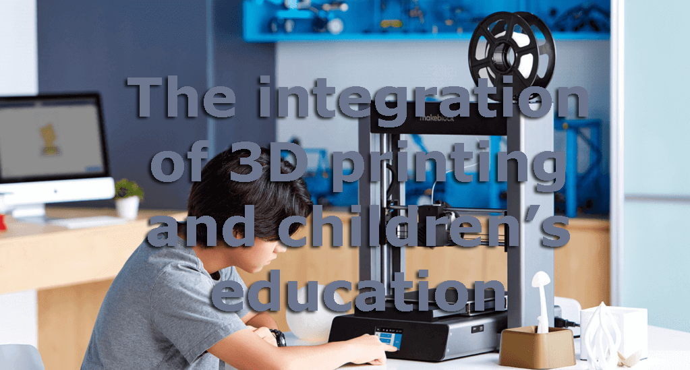
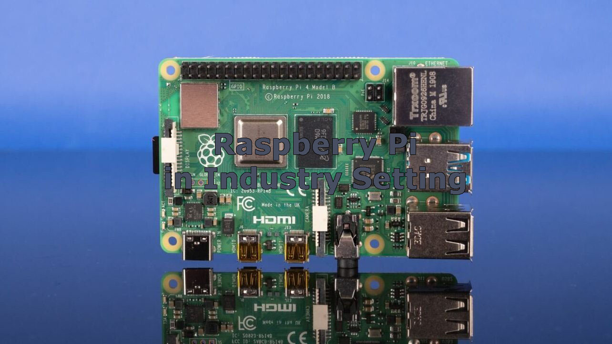
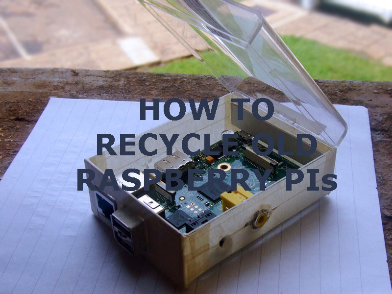

This is the website for everyday updates from Biological breakthroughs and Healthcare news and advices from reliable medical professionals. It also includes updates and anything new for the learning technologies
and also innovation for smart hardwares and internet of things.
One of the most significant developments in health and wellness has been the rapid advances in tracking and testing, which are facilitating personalised health and wellness recommendations on demand.
Wearables are becoming even more sophisticated. The models on the market now allow consumers to track more granular metrics than ever before, with Mind Body Green hailing this a new era of “micro-tracking”.
Not only are wearables collecting a wider range of data, they’re using this to better empower their users. Oura, for instance, the world’s first wearable ring, provides a “readiness score” to help users understand when they are at their best – both mentally and physically – as well as when they should focus on recovery.
Similar developments are happening in the world of testing, with companies allowing users to complete a series of tests at home, and then personalise their recommendations based on this. In the past, in-home testing has been a barrier to personalised health and nutrition, but now with greater familiarity with the concept as a result of the pandemic, it could open the door to new services which combine tracking with testing to create hyper-personalised recommendations at speed.
Mental health has become an increasingly important part of the conversation when it comes to health and wellness. This has come into even sharper focus as a result of the pandemic.
The impact of the virus and the resulting lockdowns have seen anxiety and depression skyrocket and, in line with this, mental health has become a key focus. In China, for instance, 87% of consumers are focused on taking care of their mental health, according to research by PWC conducted after the onset of the pandemic.
Research we conducted to determine which of the behaviours adopted during the pandemic will persist in the long-term found that undertaking activities to support mental health is one of the areas with greatest sticking power.
Businesses are also increasingly prioritising mental health. Recent research we conducted in partnership with Bloomberg found that 66% of companies are engaging an external vendor to provide healthcare/wellbeing training for their employees and half are looking to support employees with mental health and stress management.
Sleep is big business, with the industry set to be worth a massive $585 billion by 2024 according to Statista. The impact of the pandemic is fuelling growth in this sector with consumers placing an increasing emphasis on quality sleep against a backdrop of anxiety and stress.
This is leading to a more scientific approach to sleep. The Global Wellness Summit predicts that a new focus on circadian health will shape the products and services we see in the category. Circadian health relates to aligning behaviours with our natural circadian rhythms – 24-hour cycles such as the sleep-wake cycle, which are influenced by external factors like natural light and temperature.
Shifting the way we think about sleep to place a greater emphasis on circadian rhythms could have broader implications when it comes to other behaviours, for instance, disconnecting from devices before bed, or the way we care for our skin, making this an interesting space to watch.
Learning

3D printing technology refers to the use of a 3D printer to connect the computer, the image formed in the computer, the use of powdery metal or plastic and other adhesive materials, by layer printing. The principle of 3D printers is similar to that of ordinary printers, except that the raw materials have changed from paper and graphite to metals and ceramics.
Several advantages of using 3D printing technology for educational product production and classroom learning were demonstrated at CES 2020.
Reduction of difficulty and waste in creation of resources - Traditionally, when manufacturing complex items, not only is the production troublesome but if it goes wrong, a lot of material will be wasted. 3D printing technology uses a layer-by-layer bonding manufacturing method and the data for a flawless production is all on the computer. The output is convenient, fast and needs little to no manpower.
A variety of tangible shapes – The three-dimensional shapes allow students to experience and understand in a clearer way than 2D images or other traditional materials.
Realizing ideas – Students can use 3D printing to turn the ideas in their heads into something they can feel, improving their hands-on ability through practice, and increasing their interest in learning.
After considering all the above points we need to add that 3D printing technology is expensive, and it remains difficult for education companies to integrate the technology into their classrooms.
Two of the latest such technologies showcased were the MoonLite DLP 3D printer and the FDM Desktop 3D printer.
Samsung-backed company Star Labs demonstrated a virtual human being called NEON. Digital Trends reported that the product is described as an “artificial intelligence” designed to be the best partner for its users. The company claims that it has the ability to "show emotions and intelligence." It can "connect and learn more about us, gain new skills, and evolve."
Last but not least, Japan's ASATEC, which is also committed to the field of virtual reality content, is developing an educational toy called ‘Keard’ that uses AR and cards to help children learn English words very effectively.
EqualOcean recently published an article in which you can find the key insights from the historic show – and how it differed from 2019.
Smart IoT Applications

Distributor Farnell recently surveyed 1,500 electronics engineers and discovered that 44% of them were using Raspberry Pis as their industrial single-board computer. Arduino boards came in second in popularity, at 28%, and Texas Instruments’ Beagleboards followed, with 6% of electronics engineers choosing them.
Almost a quarter of the respondents used these generic single-board computers as proofs of concept ahead of building a custom device, although 22% used them in production units. A fifth of those using generic SBCs in production are scaling them up to 5,000 units or more. That’s a lot of work done on computers originally designed to teach kids about computing.

Every tinkerer or gadget lover has a drawer or box full of old gear that no longer works or is simply no longer useful. Well, now if those boxes or drawers contain Raspberry Pi 3 Model B boards, Pi 3 Model B+ boards, or Pi 4 boards, the owner can send them in for reuse. The program is being touted as recycling, but what will really happen is the reusable boards will be refurbished, repackaged, and then sold for a lower cost, while those that no longer work will be sent to a processing center to get as many useful components off the boards as possible before they get tossed.
This is way better than just dumping them in your trash, and my hope is that as companies develop these programs we’ll also see a new emphasis on designing electronics for recyclability and teardown.